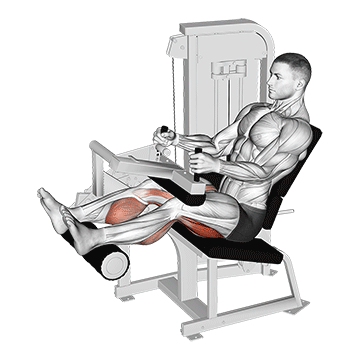
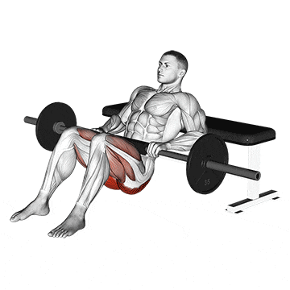

SOBRE O TREINO

O Treino de musculação é um programa de exercícios voltado para o desenvolvimento e fortalecimento dos músculos do corpo.
Ele utiliza pesos, máquinas de musculação e exercícios com o peso corporal para criar resistência e estimular o crescimento muscular.
TREINOS
Peito
O treino de peito é uma parte importante do treinamento de força e musculação, focado no desenvolvimento dos músculos do peitoral maior e peitoral menor. Um treino de peito ajuda a fortalecer os músculos do tórax, melhorar a postura, aumentar a estabilidade dos ombros e proporcionar uma aparência física mais definida.
Flexões
1 - Posicione-se no chão de bruços, com as palmas das mãos apoiadas
no chão na largura dos ombros e os dedos apontados para a frente.
2 - Estenda as pernas
para trás, mantendo os pés juntos, formando uma linha reta da cabeça aos calcanhares.
3 -
Contraia os músculos abdominais e glúteos.
4 -
> Pedro IFPI:
Abaixe lentamente o corpo, dobrando os cotovelos, mantendo-os próximos ao corpo.
5 -
Continue abaixando até que seu peito esteja a poucos centímetros do chão
ou sinta uma leve tensão nos músculos do peito e braços.
6 -
Pause brevemente e, em seguida, empurre o corpo de volta à posição inicial, estendendo os braços completamente.
Supino reto com barra

1 - Deite-se em um banco plano, com os pés apoiados no chão.
Segure a barra com as mãos um pouco mais afastadas do que a largura dos ombros.
2 -
Retire a barra do suporte, mantendo os braços estendidos.
3 -
Abaixe a barra lentamente em direção ao peito, flexionando os cotovelos.
4 -
Pare quando a barra tocar levemente o peito.
6 -
Empurre a barra de volta à posição inicial, estendendo os braços.
7 -
Repita o movimento por várias repetições, mantendo a forma correta e controlada.
Supino reto com halteres

1 - Deite-se em um banco plano, segurando um haltere em cada mão.
Posicione os alteres acima do peito, com os braços estendidos e as palmas das mãos voltadas para a frente.
2 -
Abaixe os alteres lentamente em direção ao peito, flexionando os cotovelos.
3 -
Pare quando os alteres estiverem próximos ao peito.
4 -
Empurre os alteres de volta à posição inicial, estendendo os braços.
5 -
Repita o movimento por várias repetições, mantendo a forma correta e controlada.
6 -
Repita o movimento por várias repetições, mantendo a forma correta e controlada.
Supino inclinado com barra

1 - Posicione-se em um banco inclinado a um ângulo de 30 a 45 graus.
2 -
Pegue a barra com uma pegada ligeiramente mais ampla que a largura
dos ombros, com as palmas das mãos voltadas para a frente.
3 -
Retire a barra dos suportes e posicione-a acima do peito com os braços estendidos.
4 -
Mantendo os ombros recuados e as escápulas puxadas para trás, abaixe lentamente
a barra em direção ao peito, mantendo os cotovelos ligeiramente dobrados.
5 -
Quando a barra estiver próxima ao peito, empurre-a de volta à posição inicial, estendendo os braços.
6 -
Repita o movimento por várias repetições, mantendo a forma adequada e controlando o peso.
Supino inclinado com halteres

1 - Escolha um banco inclinado com um ângulo de inclinação de cerca de 30 a
45 graus.
2 -
Segure um halter em cada mão, com as palmas das mãos voltadas para a frente.
3 -
Deite-se no banco inclinado, com as costas apoiadas e os pés firmemente plantados no chão.
4 -
> Pedro IFPI:
Mantendo os ombros recuados e as escápulas puxadas para trás, empurre os halteres para
cima, estendendo os braços acima do peito.
5 -
Lentamente, abaixe os halteres em direção ao peito, flexionando os cotovelos.
6 -
Continue abaixando os halteres até que fiquem ligeiramente acima do peito, sentindo um alongamento no peitoral.
7 -
Empurre os halteres de volta à posição inicial, estendendo os braços acima do peito,
concentrando-se na contração dos músculos do peitoral e dos ombros.
8 -
Repita o movimento por várias repetições, mantendo a forma adequada e controlando o peso.
Peck Deck

1 - Sente-se no Peck Deck com as costas retas e ajuste a altura
do assento de acordo com a posição dos seus ombros.
2 - Posicione os antebraços e os cotovelos nas almofadas laterais e segure as alças.
3 - Mantendo os pés apoiados no chão e as costas retas, empurre as almofadas juntas à sua frente,
realizando um movimento de abdução dos braços.
4 - Contraia os músculos do peitoral enquanto empurra as almofadas juntas. Segure a posição por
um breve momento para uma contração máxima.
5 - Retorne lentamente à posição inicial, permitindo que os braços se abram novamente, sem exagerar no alongamento.
6 - Repita o movimento por várias repetições, mantendo a forma adequada e controlando a carga.
Costa
Um bom treino de costas oferece para além dos aspectos estéticos, um bom alicerce para o desenvolvimento de outras musculaturas do corpo humano, assim como uma estabilidade central capaz de previnir lesões e de aumentar a performace global do indíviduo nas tarefas do dia-a-dia.
Barra Fixa
Primeiramente você precisa de uma barra que esteja em uma altura suficiente para suspender o corpo. Segure-a com as mãos um pouco além da linha dos ombros, levante os pés do chão e tente juntar as escápulas para ativar os músculos das costas. Fique assim pelo tempo que conseguir e, por fim, solte e pouse devagar.
Puxada com barra no Pulley

Como executar:
1 - Primeiro, sente-se em uma máquina pulley, e ajuste o equipamento conforme a sua altura;
2 - Em seguida, segure a barra com uma pegada aberta, em uma distância maior que a largura dos ombros, com as mãos direcionadas para fora. Uma outra forma de executar o exercícios é segurar a barra na mesma largura dos ombros.
3 - Depois, com os braços estendidos na sua frente, leve o tronco para trás formando um ângulo em torno de 30º, ao mesmo tempo em que cria uma leve curvatura na região lombar e estufa o peito.
4 - Então, exale o ar e traga a barra para baixo, até que ela toque a parte superior do peito. Ao atingir a posição de contração total, comprima os músculos das costas.
5 - Lembre-se que o tronco deve ficar imóvel e somente os braços devem se mexer. O único esforço feito pelos antebraços é o de segurar a barra
6 - Depois, segure a posição contraída por uma segundo, comprimindo as escápulas;
7 - Então, levante a barra lentamente à posição inicial, inalando o ar, até que os braços estejam totalmente estendidos e o latíssimo do dorso completamente alongado.
Puxada pela frente no triangulo Pulley

Como executar:
1 - Para começar, sente-se na máquina com os quadris encaixados no acolchoado do equipamento;
2 - Em seguida, pegue o triângulo com as mãos, que devem estar a uma distância menor do que a largura dos ombros, e as palmas das mãos devem apontar para seu corpo. Além disso, o corpo deve estar na vertical e os braços retos, acima da cabeça.
3 - Então, estufe o peito, faça um pequena curva na região da lombar e leve a carga até o peito, inclinando-se ligeira e suavemente enquanto a puxa. Na parte baixa do movimento, as escápulas devem estar comprimidas.
4 - Depois, volte ao posicionamento original, levantando a carga lentamente.
Remada cavalinho
Como executar:
1 - Para começar, coloque uma carga adequada para você na barra.
2 - Então, se posicione no equipamento, colocando uma perna de cada lado da barra. Abaixe os quadris e segure a alça das barras com as palmas das mãos para fora, mantenha as costas retas durante todo o exercício.
3 - Em seguida, retire o peso do chão e leve a barra até a altura dos braços. O movimento deve ser realizado por meio da flexão dos cotovelos, com as escápulas contraídas e puxando o peso até o peito.
4 - Depois, faça uma pausa rápida na parte alta do exercício e, então, retorne à posição original.
Remada curvada com barra
Como executar:
1 - Para começar, fique em pé, com as pernas afastadas e os joelhos levemente flexionados. Segure uma barra reta com as mãos paralelas aos ombros e com as palmas viradas para a frente.
2 - Em seguida, deixe a coluna reta e encaixe os ombros, incline o tronco para a frente, jogando o quadril para trás. Mantenha os cotovelos estendidos até que a barra fique na altura das coxas, e contraia os bíceps.
3 - Então, puxe a barra até a cintura, ao mesmo tempo em que flexiona os cotovelos.
4 - Depois, segure a contração por um momento e retorne à posição inicial.
Remada maquina de cabos
Como executar:
1 - Primeiro, sente-se na máquina de cabos e prenda o triângulo ou a barra, conforme a sua preferência.
2 - Em seguida, estique os braços para pegar o acessório, puxando-o em direção à parte inferior do peitoral (triângulo) ou superior (barra).
3 - Então, volte com o acessório à posição inicial.
Remada serrote
Como executar:
1 - Para começar, coloque um halter em cada lado de um banco reto.
2 - Em seguida, coloque as pernas em cima do banco, encostando o joelho e incline tronco para a frente até a parte superior do corpo ficar paralela ao chão.
3 - Depois, coloque uma das mãos no banco (a que for correspondente a perna que está no banco) para obter suporte e pegue um halter com a outra mão. Mantenha a região lombar reta e a palma da mão voltada para o tronco.
4 - Então, leve o peso para cima, até a lateral do peito. Flexione o cotovelo e mantenha o tronco imóvel.
> Pedro IFPI:
5 - Durante esse movimento, solte o ar e contraia bem os músculos das costas. Você deve se certificar de que está fazendo força com os músculos das costas e não com o braço. Além disso, os antebraços não devem fazer nenhum esforço, a não ser o de segurar o halter.
6 - Depois, desça o halter e volte à posição inicial, ao mesmo tempo em que inala o ar. Após atingir o número determinado de repetições, troque a posição dos braços.
Bíceps
O treino de bíceps é importante para fortalecer e desenvolver os músculos dos braços. É recomendado variar as técnicas de treinamento, como o número de repetições e séries, ângulos e pegadas, e utilizar técnicas avançadas.
Rosca bíceps direta com barra reta

1 - Fique em pé com os pés afastados na largura dos ombros e
segure a barra reta com as palmas voltadas para cima.
2 -
Mantenha os braços estendidos ao longo do corpo e os cotovelos próximos às laterais.
3 -
Flexione os cotovelos e levante a barra em direção ao peito, contraindo os músculos do bíceps.
4 -
Pause brevemente no topo do movimento, quando a barra
estiver próxima ao peito, para sentir a contração máxima do bíceps.
5 -
Lentamente, abaixe a barra de volta à posição inicial, estendendo os cotovelos e alongando os músculos do bíceps.
6 -
Execute o número desejado de repetições, respeitando sua capacidade e nível de treinamento.
Rosca bíceps direta com barra W
1 - Fique em pé com os pés afastados na largura dos
ombros e segure a barra W com as mãos na largura dos ombros,
palmas voltadas para cima.
2 -
Mantenha os braços estendidos ao longo do corpo, mantendo os cotovelos próximos às laterais.
3 -
Flexione os cotovelos e levante a barra em direção ao peito, contraindo os músculos do bíceps.
4 -
Mantenha os pulsos em uma posição neutra e permita que a barra W siga a curva natural dos braços.
5 -
Pause brevemente no topo do movimento, quando a barra estiver próxima ao peito,
para sentir a contração máxima do bíceps.
6 -
Lentamente, abaixe a barra de volta à posição inicial, estendendo os cotovelos e alongando os músculos do bíceps.
7 -
Execute o número desejado de repetições, respeitando sua capacidade e nível de treinamento.
Rosca bíceps direta com halteres

1 - Para começar, fique em pé e pegue um halter com cada mão.
2 -
Os cotovelos devem estar próximos ao tronco e as palmas das mãos direcionadas
para a frente.
3 -
Então, com os antebraços imóveis, solte o ar e levante os pesos ao mesmo tempo em que contrai os bíceps.
4 -
Isso deve ser feito até que os bíceps estejam completamente contraídos e os halteres se encontrem na altura dos ombros.
5 -
Em seguida, permaneça na posição contraída por um instante.
6 -
Depois, inspire o ar e retorne lentamente ao posicionamento original.
Rosca bíceps martelo com halteres

1 - Primeiro, pegue um halter em cada mão e permaneça
com os braços estendidos ao lado do corpo.
2 -
As palmas das mãos devem ficar voltadas para dentro.
3 -
Então, sem mexer os antebraços, você deve dobrar os cotovelos e levar os halteres
para o mais próximo dos ombros que conseguir.
4 -
Em seguida, faça uma p
ausa e lentamente retorne à posição original, estendendo bem os braços.
Rosca bíceps no cabo e usando a corda

1 - Primeiro, fique em pé, de maneira ereta e com a coluna vertebral reta.
2 -
Pegue as extremidades da corta com as palmas das mãos apontadas para
o centro e deixe os braços estendidos.
3 -
Então, faça o movimento de levantamento flexionando os cotovelos.
4 -
Depois, retorne o movimento à posição inicial
Rosca bíceps apoiado no banco Scott com barra W
1 - Primeiro, sente-se no banco Scott e segure a barra na parte
estreita e interna de seu cabo.
2 -
Para pegar corretamente, recomenda-se que alguém
dê a barra para você, ou que você a pegue do suporte para barras que
os bancos Scott costumam ter.
3 -
Ao segurar a barra, as palmas das mãos devem apontar para a frente e levemente inclinadas para dentro,
devido ao formato da barra. Os antebraços e o peito devem estar posicionados contra a parte acolchoada,
segurando a barra na altura dos ombros.
4 -
Então, enquanto inspira, abaixe a barra até que o antebraço esteja estendido e o bíceps completamente alongado.
5 -
Depois, ao exalar o ar, utilize o bíceps para subir a barra até que ele esteja totalmente
contraído e a barra se encontre na altura dos ombros.
6 -
Então, contraia bem os bíceps, permaneça nessa posição por um instante e volte ao posicionamento original.
7 -
Depois, retorne o movimento à posição inicial.
Rosca bíceps concentrada unilateral com halter
1 - Primeiro, sente-se na ponta de um banco com as pernas afastadas
e segure um halter em uma das mãos,
os joelhos devem estar flexionados e os pés firmes no chão.
2 -
O cotovelo da mão que segura o peso deve ser apoiado na parte interna da coxa,
que fica perto do joelho, e estar estendido.
3 -
A pegada é com a mão virada em direção à outra coxa,
enquanto isso, a mão livre deve ser apoiada na outra coxa para ajudar a dar estabilidade ao corpo.
4 -
Depois, eleve o halter, fazendo o movimento de flexão do cotovelo, até que a carga se aproxime do ombro.
5 -
Toda a força deve ficar concentrada no bíceps,
segure a contração por alguns instantes, então, desça o halter de modo controlado e retorne à posição original.
6 -
É importante não mexer o corpo durante o exercício, somente o antebraço é que deve se movimentar.
Tríceps
Quanto mais fortes forem os tríceps, maiores a força e estabilidade dos ombros e cotovelos, aumentando assim a funcionalidade, flexibilidade e amplitude de movimento dos seus braços, facilitando seu desempenho nas tarefas diárias, bem como nos esportes.
Extensão de alteres sob a cabeça

Como executar:
1 - Posicione-se em pé com os pés afastados em uma largura equivalente à largura dos ombros.
2 - Segure um halter em cada uma das mãos e estender os braços para cima, sobre a cabeça, com uma palma da mão voltada para a outra.
3 - Então, flexione os cotovelos e abaixe o haltere, colocando-o atrás da cabeça, de modo que ele fique perpendicular ao chão.
4 - Pause brevemente e estenda os braços, levando o halter sob a cabeça e retornando à posição inicial.
Extensão de Triceps com barra reta
Como executar:
1 - Primeiro, deite-se de costas em um banco reto e segure a barra com uma pegada fechada, as palmas das mãos apontando para fora e os braços estendidos e perpendiculares ao solo;
2 - A partir dessa posição inicial, abaixar a barra, flexionando os cotovelos e mantendo os antebraços fixos. Não abra os cotovelos para fora durante o movimento.
Mergulho no Banco
Como executar:
1 - Coloque um banco atrás de você e outro na sua frente. Eles devem estar perpendiculares ao seu corpo e você deve segurar na borda do banco de trás com as duas mãos próximas ao corpo. As palmas devem estar separadas em uma distância equivalente à largura dos ombros e os braços devem estar completamente estendidos.
2 - As pernas devem ficar estendidas para a frente em cima do outro banco, com os pés paralelos. Elas devem estar paralelas ao chão e o tronco perpendicular ao chão. Se optar por usar o peso, peça que um colega coloque a carga no seu colo.
3 - O peso deve ser posicionado de modo adequado, para que fique em cima de você durante todo o exercício. Você não deve colocar a carga sozinho, pois o movimento será difícil e você correrá riscos de se lesionar.
4 - Então, lentamente abaixe o corpo, dobrando os cotovelos ao mesmo tempo em que inala o ar. Pare de descer quando formar um ângulo ligeiramente menor que 90º com a parte superior e a inferior dos braços. Neste momento, os cotovelos devem estar o mais perto possível e os antebraços devem apontar para baixo o tempo todo.
5 - Use o tríceps para levar o tronco para cima e elevar novamente o corpo para a posição inicial, ao mesmo tempo em que exala o ar.
Triceps apoiado no banco

Como executar:
1 - Sente-se na borda de um banco com as mãos abaixo dos ombros, com as palmas firmes na extremidade do banco e os joelhos flexionados a 90º.
2 - É preciso segurar firmemente, manter o tronco firme e encaixado, contrair os glúteos e dar uns passos para a frente, deixando os braços totalmente estendidos e sustentando o peso do corpo.
3 - O próximo passo é flexionar os cotovelos e abaixar o corpo em frente ao banco, formando um ângulo de 90º. Fique nessa posição por um instante, deixando os cotovelos junto ao tronco, e volte ao posicionamento original utilizando a força dos tríceps.
Triceps na polia alta com barra reta
Como executar:
1 - Prenda uma barra reta ou inclinada a uma polia alta e segure-a com as palmas das mãos voltadas para baixo e separadas em uma distância equivalente à largura dos ombros.
2 - Prenda uma barra reta ou inclinada a uma polia alta e segure-a com as palmas das mãos voltadas para baixo e separadas em uma distância equivalente à largura dos ombros.
3 - Use o tríceps para empurrar a barra até a frente das coxas, deixando os braços totalmente estendidos, ao mesmo tempo em que exala o ar. Pause o movimento por um segundo nesta posição, e volte lentamente a barra ao seu posicionamento original enquanto inala o ar.
Tríceps na polia alta com corda
Como executar:
1 - Prenda uma corda a uma polia alta no equipamento de cabo e segure-a com uma pegada neutra, ou seja, as palmas das mãos devem ficar voltadas uma para a outra.
2 - Fique em pé, com o tronco reto e uma ligeiramente inclinado para frente. Os antebraços devem estar próximos ao corpo e perpendiculares ao chão.
3 - Então, use o tríceps para abaixar a corda, levando cada lado do acessório até as coxas, ao mesmo tempo em que exala o ar. Na parte final do movimento, os braços deverão estar totalmente estendidos e quase perpendiculares ao chão
4 - Segure a posição contraída durante um segundo e lentamente erga a corda, retornando ao posicionamento original, ao mesmo tempo em que exala o ar.
Ombros
O treinamento de ombros é uma parte importante do desenvolvimento muscular geral e da força na parte superior do corpo. Fortalecer os ombros pode melhorar sua postura, estabilidade e desempenho em uma variedade de atividades físicas.
Desenvolvimento de ombros com halteres
Como executar:
1 - Comece sentando-se em um banco com as costas retas, segure
um haltere em cada mão na altura dos ombros e com os cotovelos dobrados,
como na imagem acima.
2 -
Em seguida, leve os halteres para cima no sentido vertical até esticar os braços.
3 -
Depois, traga os halteres para baixo, até que eles toquem os ombros.
Desenvolvimento de ombros com barra
Como executar:
1 - Primeiro, sente-se em um banco reto com uma leve inclinação, deixe a coluna reta e encoste a
parte superior das costas no encosto do banco.
2 -
Em seguida, pegue a barra com as mãos a uma distância equivalente à largura dos
ombros, as palmas das mãos devem estar voltadas para frente.
3 -
Depois, suba a carga até a altura do pescoço, deixando os cotovelos
flexionados ao lado do corpo.
4 -
Os antebraços devem estar na posição vertical e as escápulas travadas para trás.
5 -
Em seguida, empurre a barra para cima com a força dos músculos dos ombros,
estendendo os cotovelos até a barra ficar estabilizada acima da cabeça.
6 -
Para finalizar, desça a barra flexionando os cotovelos para voltar à posição inicial.
7 -
Lembre-se que uma pegada mais aberta que a largura dos ombros eleva o risco de se lesionar, além de
diminuir a participação do tríceps na execução do exercício.
Desenvolvimento de ombros com barra
Como executar:
1 - Comece em pé e segure um halter em cada mão, com
as palmas para frente, e mantendo as mãos a uma distância ligeiram
ente menor que a distância dos ombros.
2 - Deixe os braços estendidos
ao lado do corpo e os cotovelos levemente dobrados.
3 - No início da posição
os halteres ficam apoiados nas coxas.
4 -
Em seguida, levante os halteres com a lateral dos ombros, flexionando os cotovelos e exale o ar durante o movimento;
Lembre-se que os pesos devem estar próximos ao corpo e os cotovelos devem guiar o movimento.
5 -
Enquanto levanta os halteres, os cotovelos devem sempre estar a uma altura acima dos antebraços,
o movimento termina quando os halteres quase tocarem o queixo.
6 -
Logo depois, pare por uma segundo nessa posição e então volte devagar à posição inicial
Remada alta no cabo
Como executar:
1 - Para começar, segure uma barra reta de cabo conectada a uma polia baixa, com
as palmas das mãos voltadas para as coxas. A distância entre as mãos deve ser ligeiramente menor
que a largura dos ombros.
2 - A barra deve ficar apoiada nas coxas e os braços devem estar
estendidos, com os cotovelos levemente dobrados e as costas retas.
3 -
Em seguida, use os ombros para levantar a barra ao mesmo tempo em que exala o ar e a leva a quase
encostar no queixo.
4 -
Depois, pause o movimento por um segundo e então abaixe a barra lentamente até o seu local de origem,
ao mesmo tempo em que inala o ar.
5 -
Durante o movimento, a barra deve ser mantida próximo do corpo e os cotovelos devem
estar a uma altura maior que a dos antebraços,
já o tronco deve permanecer imóvel.
Voador invertido na máquina
Como executar:
1 - Antes de começar, ajuste as alças da máquina e escolha um
peso apropriado (peça ajuda do instrutor e não escolha uma carga muito
pesada para você), então ajuste o banco para que as alças estejam na altura dos ombros.
2 -
Em seguida, pegue as alças do aparelho c
om as palmas das mãos voltadas para dentro e em um movimento
semicircular puxe-as em um sentido lateral e para trás, contraindo o
deltoide posterior os braços devem permanecer levemente dobrados durante
o exercício e todo o movimento deve ocorrer na articulação dos ombros.
3 -
Depois, pause o movimento na parte traseira por alguns instantes, e então retorne lentamente à posição original.
Elevação lateral de ombros com halteres

Como executar:
1 - Para começar, fique em pé e posicione os seus pés paralelos aos
ombros segure um halter em cada mão com as palmas voltadas para você.
2 - Não se
esqueça de manter a coluna reta e as escápulas encaixadas para trás.
3 -
Em seguida, coloque os pesos próximos, na altura das coxas e deixe os cotovelos levemente flexionados.
4 -
Depois, eleve os halteres lateralmente, fazendo o movimento de abdução dos ombros (em que os braços são
levantados para fora e para o lado), até os braços ficarem paralelos ao chão,
o esforço do movimento deve ser concentrado na parte lateral dos deltoides, na articulação dos ombros,
portanto, os cotovelos devem permanecer imóveis.
5 -
Então, contraia bem os músculos e desça lentamente os halteres e volte à posição original.
Pernas
O treino de pernas é uma parte essencial de um programa de exercícios equilibrado. Fortalecer as pernas não apenas contribu i para um corpo esteticamente equilibrado, mas também traz muitos benefícios funcionais e de saúde.
Leg press
1 - Comece ajustando o banco e os pés na plataforma do aparelho pera sua estatura.
2 -
Em seguida, empurrar com as pernas os pesos sobrepostos.
3 -
Faça isso de maneira lenta levantando e voltando sempre até à posição inicial.
4 -
Repetindo o exercício em sessões ou de acordo com o objetivo
Agachamento no hack
Como executar:
1 - Comece com as costas apoiadas nas almofadas do aparelho.
2 -
Deixe os pés afastados a uma distância maior que a largura do quadril.
3 -
Assim, segure nas alças laterais com as mãos para obter apoio e segurança, inspire, levante e destrave o aparelho.
4 -
Em seguida, inicie o movimento de agachamento lentamente até atingir um ângulo menor que 90 graus com os joelhos.
5 -
Depois, retorne à posição inicial.
6 -
Faça o número de repetições e de séries indicados por um profissional capacitado.
Agachamento com barra
Como executar:
1 - Comece na posição em pé, apoie o peso nas costas,
na região do trapézio e segure-o firmemente e retire-o do suporte.
2 -
Depois, com a coluna reta, estabilize o tronco, com os pés ligeiramente virados para fora e
separados paralelos aos ombros, mantenha os joelhos estendidos na mesma direção dos pés.
3 - Deixe as
escápulas encaixadas para trás e o abdômen contraído.
4 -
Em seguida, desça o tronco e flexione os joelhos e movimente o quadril para trás, então, desça
até que as coxas ficarem paralelas ao chão e, durante esse movimento, o tronco se inclina para
frente e a coluna permanece reta. Os joelhos não podem ultrapassar a linha dos pés.
5 -
Depois, eleve o tronco por meio da extensão dos joelhos, trazendo o quadril para frente. Não se esqueça de contrair os músculos da coxa durante a subida;
Ao finalizar suas repetições, coloque a barra de volta ao seu suporte com bastante cuidado.
Agachamento na máquina Smith
Como executar:
1 - Comece ajustando o equipamento com o peso escolhido.
2 -
Em seguida, posicione os pés paralelos aos ombros, encaixe-se embaixo da
barra e gire a mesma para destravá-la.
3 -
Então, fique na posição em pé, com as costas ligeiramente arqueadas,
o peito para cima e a cabeça apontando para a frente.
4 -
Depois, desça o tronco flexionando os joelhos e os quadris,
continue descendo até formar um ângulo em torno de 90º com as pernas.
5 -
Por fim, volte à posição original por meio da extensão dos quadris e dos joelhos.
Cadeira extensora
Como executar:
1 - Comece justando o encosto do equipamento para que o fundo das costas
fique bem apoiados e que o joelho não ultrapasse a linha dos pés.
2 -
Depois, posicione os pés atrás do apoio da cadeira e estenda a perna para que o apoio fique
na mesma altura do joelho.
3 -
Durante o processo, mantenha a perna completamente estendida.
4 -
Vá controlando os movimentos saindo sempre da posição inicial para a final e repetindo o processo em sessões.
Cadeira flexora
Como executar:
1 - Primeiramente, sente-se na cadeira e então apoie a sua coluna no encosto dela, de modo que os seus pés fiquem apoiados exatamente em cima
da almofada do aparelho e na altura exata da linha dos tornozelos.
2 -
Muita atenção no momento de travar a almofada da cadeira, ela serve como apoio para
suas coxas, já que elas devem estar exatamente acima dos seus joelhos.
3 -
Flexione então os seus joelhos até conseguir a contração máxima musculatura posterior da coxa.
4 -
Retorne de maneira lenta até alcançar a posição inicial, sempre estendendo os joelhos de uma forma bem
controlada, para evitar qualquer risco de lesões.
5 -
Realize esse movimento ao longo de toda a quantidade de repetições
e de séries que forem estabelecidas em sua ficha de exercício.
flexora deitada
Como executar:
1 - Regule a mesa flexora de acordo com sua altura e tamanho das pernas.
2 -
Deitar na mesa flexora, que deve estar regulada de acordo com a altura e tamanho das pernas.
3 -
Encaixe o quadril na curva do equipamento e os pés no apoio.
4 -
Em seguida, comece a flexionar as pernas até pelo menos 90º.
5 -
Retorne as pernas a posição inicial de maneira mais lenta.
6 -
Repita o processo em sessões, sempre de acordo com o seu objetivo
Cadeira adutora
Como executar:
1 - Para iniciar o exercício, após configurar a carga indicada pelo instrutor,
você deve se sentar na cadeira adutora.
2 - Colocar as pernas abertas e dobradas
para fora
do aparelho, em um ângulo de 90º.
3 - As almofadas da máquina devem ficar bem na altura dos
joelhos.
3 - A partir daí, você já pode começar as movimentações,
é importante que você separe as pernas o máximo possível enquanto empurra as faixas que estão
do lado de fora das suas pernas.
4 - Em seguida, retorne lentamente à posição inicial até que as pernas se
juntem novamente.
5 - É importante sempre ficar atento a postura durante todo o exercício.
Cadeira abdutora
Como executar:
1 - Os exercícios da cadeira abdutora seguem a mesma técnica apresentada
no treinamento da cadeira adutora.
2 - No entanto, para fazer o exercício, você deve se
sentar no aparelho e colocar as pernas dobradas num ângulo de 90º e juntas, ao invés
de separadas.
3 - As almofadas devem ficar na altura do joelho.
4 -
Nesta posição, comece o exercício abrindo e fechando as pernas o máximo possível,
Geralmente, é necessário fazer 3 séries com 15 repetições e colocando um tempo de descanso
de 30 segundos a 1 minuto.
4 - No entanto, você deve seguir as orientações do instrutor da academia.
Stiff com barra

Como executar:
1 - Fique de pé com a barra nas mãos.
2 -
Com a coluna ereta, mantenha os pés apoiados no solo alinhados aos ombros.
3 -
Flexione o tronco até a barra alcançar a altura da canela.
4 -
Retorne à posição inicial e refaça o movimento, lembrando-se de sempre manter a postura
Levantamento terra
Como executar:
1 - Flexione o joelho para fora alinhando com os braços.
2 -
Os ombros devem estar ligeiramente à frente com as escápulas em cima da barra.
3 -
Suba até a extensão completa do quadril com o ombro ligeiramente atrás da linha da barra.
4 -
Durante a descida, mova lentamente o quadril para trás, com a barra próxima à canela.
Glúteos
Treinar glúteos é essencial na manutenção da postura e manter a estabilidade entre quadris e joelhos.
Extensão de alteres sob a cabeça

Como executar:
1 - fique em pé ao lado da máquina com cabos e prenda o tornozelo direito no equipamento com um acessório específico para isso. Em seguida, apoie sua mão esquerda na estrutura mantendo o braço estendido. A mão direita pode ficar ao lado do corpo ou apoiada na cintura.
2 - Então, levante a perna direita lateralmente o mais alto que conseguir. Volte o pé para a posição inicial em um movimento lento e controlado para não soltar o peso todo de uma vez. Além disso, mantenha a perna esquerda no solo o tempo todo e tente não encostar o pé direito no chão durante a execução do exercício.
Agachamento sumô
Como executar:
1 - Posicione-se corretamente com os pés afastados além da largura dos ombros e os dedos dos pés apontando para fora em um ângulo de 45 graus.
2 - Mantenha a postura correta, com as costas retas, peito aberto e olhar para frente.
3 - Flexione os joelhos e os quadris, descendo lentamente como se fosse se sentar em uma cadeira. Certifique-se de que os joelhos estejam alinhados com os pés
4 - Mantenha a estabilidade com os joelhos afastados e o peso nos calcanhares. Mantenha o core contraído.
5 - Retorne à posição inicial empurrando-se pelos calcanhares, estendendo os quadris e os joelhos.
Coice no cabo
Como executar:
1 - Abaixe a alça do cabo até a altura do tornozelo;
2 - Posicione-se em pé, de frente para a máquina com os pés a uma distância equivalente à largura dos quadris.
3 - Prenda um dos pés na alça do cabo e segure a máquina com uma das mãos, conforme a imagem acima mostra.
4 - Com o peito elevado, use os glúteos para puxar o cabo, levando o pé preso na alça para trás. Durante o movimento, é ideal não arquear as costas.
5 - Após fazer uma pausa, retorne à posição original e troque de pé. Recomenda-se começar a série com o lado mais fraco.
Elevação Pélvica
Como executar:
1 - Sente-se no chão com as escápulas apoiadas em um banco ou uma caixa, os joelhos dobrados e os pés no chão abertos na largura do quadril. Cruze os braços à frente do peito.
2 - Mantendo a parte inferior das costas reta, o queixo dobrado e olhando para frente, contraia os glúteos, empurre os calcanhares e estenda o tronco em linha reta. Os joelhos devem estar alinhados com os calcanhares e dobrados em ângulos de 90°.
3 - Mantendo a lombar reta e os joelhos estáveis, abaixe lentamente os quadris de duas a três polegadas do chão. Em seguida, empurre os calcanhares e levante os quadris novamente e Repita.
Ponte para Glúteos
Como executar:
1 - Deite-se de costas com os joelhos dobrados, os pés firmes no chão e segure o peso na região pélvica, como a foto menor indica.
2 - Mantenha o core (região central do corpo) firme e levante os quadris o mais alto que conseguir, comprimindo o bumbum na parte alta do movimento.
3 - Durante a movimentação, os ombros devem permanecer no chão.
Panturrilhas
Como o bombeamento do sangue nos membros inferiores é feito através da musculatura da panturrilha, toda forma de exercício físico que fortaleça os músculos da região é extremamente benéfica para a circulação.
Panturrilha Leg press
Como executar:
1 - Coloque um peso razoável, nem tão pesado e nem tão leve.
2 -
Depois, sente-se no leg press 45 graus.
3 -
Em seguida, mantenha as pontas dos pés bem firmes na plataforma.
4 -
Levante o peso esticando completamente os joelhos.
5 -
Quando os joelhos estiverem esticados, empurre os calcanhares para alongar a panturrilha.
6 -
Retorne à posição inicial e repita o exercício
Panturrilha sentado
Como executar:
1 - Coloque o peso no aparelho.
2 -
Em seguida, sente-se e deixe as pontas dos pés no lugar indicado.
3 -
Depois, coloque a base acolchoada em cima da perna.
4 -
Destrave o equipamento e erga seus calcanhares até o pico de concentração.
5 -
Ao estender completamente a musculatura, volte à posição inicial lentamente e repita o processo
Panturrilha em pé
Como executar:
1 - Em uma caixa ou bloco alto e resistente, fique em cima
com as pontas dos pés.
2 -
Em seguida, mantenha as pernas afastadas na largura dos ombros.
3 -
Depois, veja se a metade dos pés e dos calcanhares estão para fora.
4 -
Pressione a ponta dos pés sobre a caixa, erguendo seus calcanhares.
5 -
Faça uma pequena pausa e retorne à posição inicial.
6 -
Repita o processo novamente.